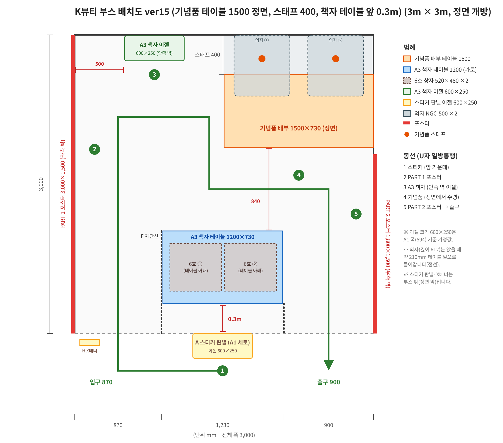
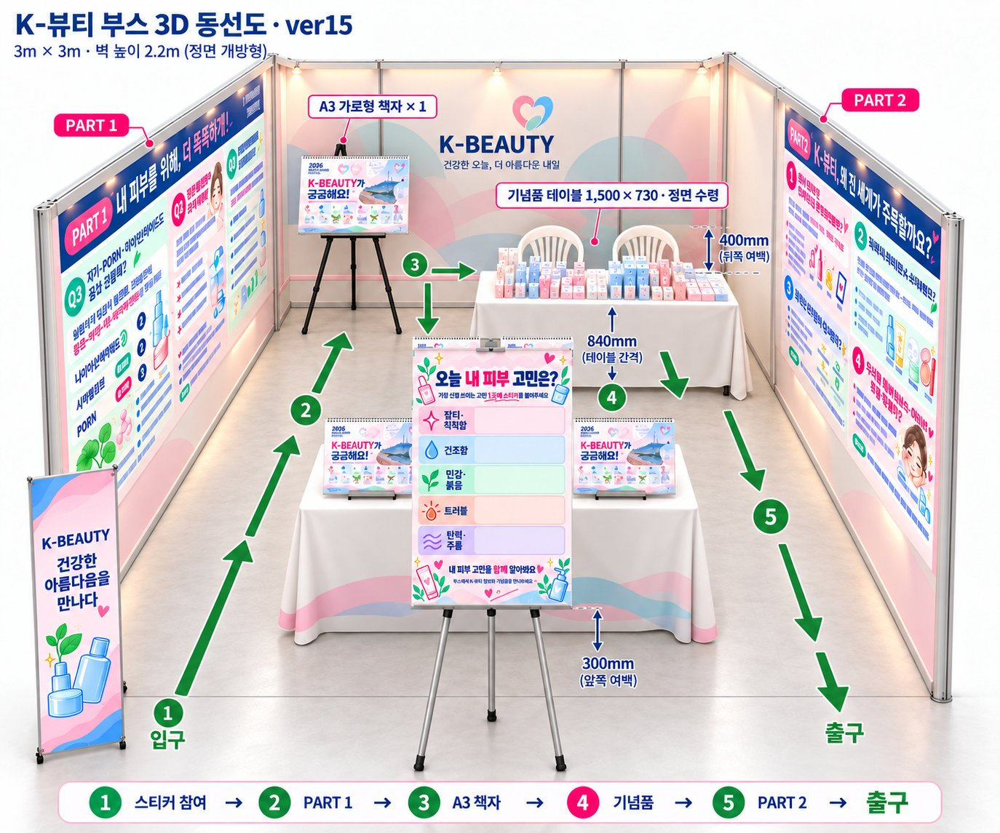
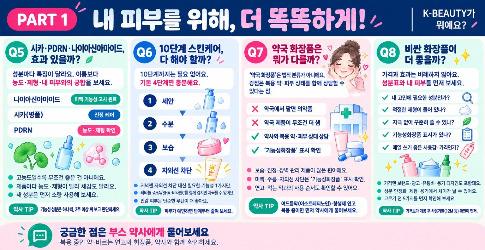
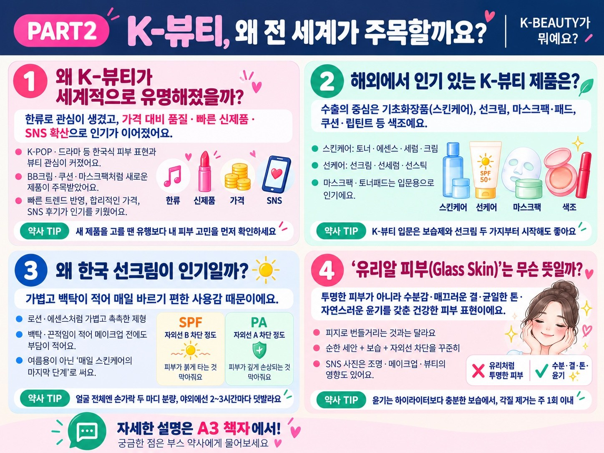
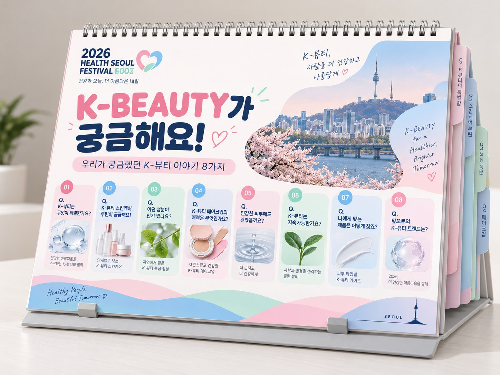

2026 건강서울페스티벌 · 서울특별시약사회
K-뷰티 부스 운영 기획안
「K-BEAUTY가 뭐예요? — 알고 쓰면 더 건강한 스킨케어」
“K-뷰티의 진짜 매력은 많이 바르는 것이 아니라,
내 피부에 맞는 것을 알고 고르는 것입니다.”
1. 행사 개요
| 항목 | 내용 |
|---|---|
| 행사명 | 2026 건강서울페스티벌 |
| 일시 | 2026. 10. 18.(일) |
| 장소 | 서울시청광장 |
| 운영 | 서울특별시약사회 |
| 부스 규모 | 3m × 3m (정면 1면 개방, 좌·우·후면 벽) |
| 주제 | K-BEAUTY가 뭐예요? — 알고 쓰면 더 건강한 스킨케어 |
| 부스명 | K뷰티가 뭐에요? |
| 대상 | 행사 방문 시민 전체 (K-뷰티 입문자부터 관심층까지 다양한 연령) |
2. 기획 배경 및 목적
기획 배경
- K-뷰티에 대한 국내외 관심이 높아지면서 화장품 정보도 많아졌지만, 대부분 광고와 SNS를 통해 전달되고 있습니다.
- 성분·사용법·제품 선택에 대해 전문가의 설명을 들을 기회는 많지 않습니다.
목적
- K-뷰티 정보를 약사의 관점에서 쉽고 정확하게 정리해 전달합니다.
- 약국을 “화장품과 복용 중인 약을 함께 상담할 수 있는 곳”으로 알립니다.
- 방문객이 자신의 피부 고민을 직접 표현하고, 약사와 자연스럽게 대화할 수 있는 참여형 부스를 운영합니다.
보조 메시지: “알고 쓰면 더 건강한 스킨케어” · “건강한 아름다움, 약사와 함께” · “K-Beauty for a Healthier Tomorrow”
콘텐츠 콘셉트
| 콘셉트 | 의미 | 관련 문항 |
|---|---|---|
| Skin First | 피부 바탕을 건강하게 가꾸는 스킨케어 중심 | Q2, Q6 |
| Glass Skin | 촉촉하고 매끄럽게 빛나는 건강한 피부 표현 | Q8 |
| Smart Ingredients | 성분을 보고 내 피부에 맞게 고르기 | Q1, Q3, Q4 |
| Daily Sun Care | 자외선 차단을 매일의 습관으로 | Q7 |
이 기획안의 기준 자료
02 · BOOTH LAYOUT
부스 배치도 · 관람 동선
구역은 알파벳(A~H), 관람 순서는 숫자(1~5)로 표시했습니다.

구역별 구성
| 구역 | 구성 | 위치·규격 | 내용 |
|---|---|---|---|
| A | 스티커 판넬 | 부스 앞 가운데, A1 세로형 판넬 (이젤 600×250) | “오늘 내 피부 고민은?” 스티커 참여, 쿠폰 배부 |
| B | PART 1 벽면 포스터 | 좌측 벽 3,000×1,500mm | 내 피부를 위해, 더 똑똑하게! (Q1~Q4) |
| C | A3 Q&A 책자 | 안쪽 벽 이젤 1부 (좌측 벽에서 500mm) + 앞쪽 A3 책자 테이블(1,200×730) 2부 | A3 가로 10면 플립북(링 제본), 서서 넘겨보기 |
| D | 기념품 배부 | 부스 가장 안쪽, 정면을 향한 테이블 1,500×730mm (우측 벽 쪽 x 1,500~3,000) | 약사 2명이 의자(NGC-500)에 앉아 정면에서 오는 참여자에게 직접 전달. 뒤쪽 스태프 공간 400mm |
| E | PART 2 벽면 포스터 | 우측 벽 1,800×1,500mm | K-뷰티, 왜 전 세계가 주목할까요? (Q5~Q8) |
| F | 차단선 | A3 책자 테이블 양옆 (점선) | 입구·출구 통로 분리 |
| H | X배너 | 부스 앞 입구 쪽, 600×1,800mm | 부스 소개와 참여 방법 안내 |
| — | 짐·재고 보관 | A3 책자 테이블 아래 6호 상자(520×480) 2개 | 직원 짐·추가 기념품·소모품. 테이블 스커트로 가림 |
관람 동선 (U자형 일방통행)
- 1스티커 참여부스 앞 가운데
- 2PART 1 포스터좌측 벽
- 3A3 책자안쪽 벽 이젤
- 4기념품 수령정면에서 수령
- 5PART 2 포스터우측 벽 → 출구
입구(좌측, 폭 870mm)로 들어와 출구(우측, 폭 900mm)로 나가는 한 방향 동선입니다. 혼잡한 시간에도 관람 흐름이 엇갈리지 않습니다. 기념품 테이블과 A3 책자 테이블 사이에 840mm 통로를 두어, 기념품을 받는 동안에도 뒤따르는 관람객이 지나갈 수 있습니다.
치수 요약
| 항목 | 치수 | 메모 |
|---|---|---|
| 정면 폭 배분 | 입구 870 / 가운데 1,230 / 출구 900 | 가운데 1,230은 A3 책자 테이블과 차단선 구간 |
| A3 책자 테이블 ↔ 부스 앞선 | 300mm | 스티커 판넬은 부스 밖 정면 |
| 기념품 테이블 ↔ A3 책자 테이블 | 840mm | 기념품 수령 대기 공간 겸 통로 |
| 기념품 테이블 뒤 스태프 공간 | 400mm | 의자 깊이 612mm 중 약 210mm는 앉을 때 테이블 밑으로 들어감 |
| A3 책자 이젤 | 좌측 벽에서 500mm | 안쪽 벽, 600×250 (A1 폭 594 기준 가정값) |
| 벽 높이 | 2.2m | 포스터 1,500mm 높이 |

03 · POSTERS
벽면 포스터 · 8문항
PART 1(좌측 벽)은 ‘고르는 법’, PART 2(우측 벽)는 ‘왜 인기인가’를 다룹니다.
벽면 포스터 2종(PART 1 좌측 벽 3,000×1,500mm, PART 2 우측 벽 1,800×1,500mm)과 A3 Q&A 책자에 같은 8문항을 담았습니다. 포스터는 지나가며 10~20초 안에 읽을 수 있도록 질문과 한 줄 답 중심으로, 책자는 핵심 설명과 약사 TIP까지 담았습니다.


인쇄 전 시안 수정 필요
- PART 1 시안의 문항 번호가 Q5~Q8로, PART 2 시안은 1~4로 되어 있습니다. 기획안 기준은 PART 1 = Q1~Q4, PART 2 = Q5~Q8입니다.
- PART 2 시안 Q8 칸의 ‘SNS 사진은 조명·메이크업·뷰티의 영향’은 ‘필터’의 오타입니다.
- 시안 이미지 속 세부 문구는 아래 표(기획안 v13)와 최종 대조 후 인쇄합니다.
8문항 · 한 줄 답 · 약사 TIP
| 질문 | 한 줄 답 | 약사 TIP |
|---|---|---|
| PART 1 — 내 피부를 위해, 더 똑똑하게! (좌측 벽) | ||
| Q1 시카·PDRN·나이아신아마이드, 효과 있을까? | 성분마다 특징이 달라요. 나이아신아마이드는 미백 기능성 고시 원료, 시카(병풀)는 진정 케어, PDRN은 농도·제형을 확인하고 골라요. | 기능성 성분은 한 번에 하나씩, 2주 이상 써 보고 판단하세요. |
| Q2 10단계 스킨케어, 다 해야 할까? | 세안 → 수분 → 보습 → 자외선 차단, 기본 4단계면 충분해요. | 제품 수가 늘수록 자극 가능성도 커져요. 피부가 따가우면 단계부터 줄이기. |
| Q3 약국 화장품은 뭐가 다를까? | 판매 장소보다, 약사에게 복용 중인 약과 피부 상태를 함께 상담할 수 있다는 점이 가장 큰 차이예요. | 광과민성 약이나 여드름 치료제를 복용 중이라면 각질 제거·레티놀 제품과 자외선 노출에 주의하고 약사와 상의하세요. |
| Q4 비싼 화장품이 더 좋을까? | 가격과 효과는 비례하지 않아요. 성분·제형·자극 여부와 꾸준히 쓸 수 있는 가격인지가 기준이에요. | 가격보다 개봉 후 사용기한(용기의 ‘12M’ 등 표시) 확인이 먼저. |
| PART 2 — K-뷰티, 왜 전 세계가 주목할까요? (우측 벽) | ||
| Q5 K-뷰티는 왜 세계적으로 유명해졌을까? | 한류로 관심이 생겼고, 가격 대비 품질·빠른 신제품 출시·SNS 확산으로 인기가 이어졌어요. | 해외에서 인기 있는 제품이 내 피부에도 맞는 것은 아니에요. 새 제품은 귀 뒤·팔 안쪽에 먼저 발라 보세요. |
| Q6 해외에서 인기 있는 K-뷰티 제품은? | 수출의 중심은 기초화장품(스킨케어)이에요. 선크림, 마스크팩·패드, 쿠션·립틴트 등 색조도 대표 품목이에요. | K-뷰티를 처음 시작한다면 보습제와 선크림 두 가지부터. |
| Q7 왜 한국 선크림이 인기일까? | 가볍고 백탁이 적어 매일 바르기 편한 사용감 때문이에요. SPF는 UVB, PA는 UVA 차단 정도를 뜻해요. | 얼굴 전체에 손가락 두 마디 분량, 야외 활동 시 2~3시간마다 덧바르기. |
| Q8 ‘유리알 피부(Glass Skin)’는 무슨 뜻일까? | 투명한 피부가 아니라 수분감·매끄러운 결·균일한 톤·자연스러운 윤기를 갖춘 건강한 피부예요. | 윤기는 하이라이터보다 충분한 보습에서 시작돼요. 각질 제거는 주 1회 이내. |
정보 전달 원칙
- 특정 성분이나 제품의 효과를 단정하거나 과장하지 않습니다.
- 화장품을 의약품처럼 표현하지 않습니다.
- 피부질환 진단이나 특정 제품·브랜드 추천 대신, 올바른 사용법과 확인할 점을 안내합니다.
- 근거가 확인되지 않은 순위·수치 표현은 쓰지 않으며, 성분·표시 관련 문구는 약사 감수를 거칩니다.
- 행사 공식 책자(K-뷰티 소개 페이지)와 내용이 이어지도록 구성했습니다.
04 · A3 BOOKLET
A3 Q&A 책자

사양
| 항목 | 내용 |
|---|---|
| 판형 | A3 가로형 플립북, 링(스프링) 제본 |
| 면 구성 | 10면: 표지 + Q1~Q8 + 뒤표지 |
| 수량 | 3부 — 안쪽 벽 이젤 1부, 앞쪽 A3 책자 테이블 2부 |
| 거치 | 이젤 600×250 / 테이블 위 탁상형 거치, 30~45도로 세워 서서 넘겨보기 |
| 역할 | 포스터의 한 줄 답을 보완하는 상세 설명 + 약사 TIP |
페이지 공통 레이아웃
운영 의도
- 의자를 두지 않고 서서 1~3분 넘겨본 뒤 다음 동선으로 이동하도록 해 체류 시간이 과하게 늘지 않게 합니다.
- 부스 앞쪽 테이블 2부는 대기 중인 관람객도 볼 수 있어, 혼잡 시간에 줄이 정체되는 것을 줄입니다.
- 정량 통계·순위·수출액을 넣는 경우 최종 인쇄 전 최신 공식 출처를 다시 확인합니다.
인쇄 전 시안 수정 필요
- 표지 시안의 8개 질문(예: ‘K-뷰티는 무엇이 특별한가요?’, ‘앞으로의 K-뷰티 트렌드는?’)이 포스터 8문항과 다릅니다. 표지 목록을 포스터 Q1~Q8과 같게 맞춰야 합니다.
- 표지 제목 ‘K-BEAUTY가 궁금해요!’와 포스터 부제 ‘K-BEAUTY가 뭐예요?’ 중 하나로 통일할지 정해 주세요.
05 · PROGRAM
참여 프로그램
참여 방법
- 스티커 판넬에서 오늘 내 피부 고민 1개를 골라 스티커를 붙이고 쿠폰을 받습니다.
- 부스 안으로 들어와 PART 1 포스터와 A3 책자를 관람합니다.
- 부스 가장 안쪽 기념품 테이블 앞에서 쿠폰을 내고 기념품을 받습니다.
- PART 2 포스터를 보며 출구로 나갑니다.
피부 고민 스티커 참여
“오늘 내 피부 고민은?” 판넬(A1 세로)에 5가지 고민 중 하나를 골라 색깔 스티커를 붙입니다. 참여 결과가 판넬에 그대로 쌓여, 지나가는 시민들도 한눈에 볼 수 있습니다.
색깔별 스티커 사용량으로 피부 고민 응답 수를 집계합니다.
약사 상담
부스 안팎의 상주 약사가 방문객에게 직접 다가가 피부 고민, 성분 고르는 법, 복용 중인 약·연고와 함께 써도 되는지 등을 안내합니다. 상담 내용은 유형별 건수만 기록하며, 개인정보는 수집하지 않습니다. 상담 준비 자료는 07 약사 상담 가이드에 정리했습니다.
06 · OPERATION
운영 인력 · 성과 목표
운영 인력
| 역할 | 인원 | 위치 | 내용 |
|---|---|---|---|
| 상주 약사 | 3명 | 부스 안·입구·출구 | 관람 안내와 약사 상담 |
| 기념품 배부 약사 | 2명 | 부스 가장 안쪽 기념품 테이블 (착석) | 쿠폰 확인, 기념품 전달 |
| 스티커 판넬 안내 | 1명 | 부스 앞 가운데 | 스티커 참여 안내, 쿠폰 배부 |
| 입구 안내 | 1명 | 입구 앞 | 대기 줄 정리, 동선 안내 |
| 약대생 봉사단 | 1~2명 | 필요한 곳 | 운영 보조, 재고 보충 |
| 합계 | 8~9명 |
부스 안 인원 관리
3m×3m 안에 인력이 모두 들어가면 관람 통로가 좁아집니다. 기념품 약사 2명과 부스 안 상주 약사 1명 정도만 안에 두고, 스티커·입구 안내와 봉사단은 부스 밖 정면에서 운영하는 것을 권장합니다.
성과 목표
| 지표 | 목표 | 측정 방법 |
|---|---|---|
| 참여 인원 | 1,000명 | 기념품 배부 수 |
| 피부 고민 응답 | 1,000건 | 색깔별 스티커 사용량 |
| 약사 상담 | 100건 이상 (참여자의 10%) | 약사별 상담 기록지 (유형별 건수) |
행사 후 목표 대비 실적, 시간대별 참여 추이, 피부 고민 분포, 상담 유형을 정리해 결과보고서를 작성합니다.
07 · PHARMACIST GUIDE
약사 상담 가이드 (FAQ 심화해설 v2)
질문을 누르면 포스터 답, 약사용 정리, 현장 질문, 바로 쓸 설명 문장이 펼쳐집니다.
현장 약사가 포스터 8문항의 ‘그 다음 질문’에 바로 답할 수 있도록 정리한 상담 준비 자료입니다. 질문 번호는 포스터와 같습니다. 전체 본문과 참고문헌 29개는 FAQ 심화해설 v2 PDF에 있습니다.
PART 1 · 내 피부를 위해, 더 똑똑하게!
Q1 시카·PDRN·나이아신아마이드, 효과 있을까?
포스터 답
성분마다 특징이 달라요. 나이아신아마이드는 미백 기능성 고시 원료, 시카(병풀)는 진정 케어, PDRN은 농도·제형을 확인하고 골라요.
약사용 한 줄 정리
세 성분은 근거의 무게가 다릅니다. 사람 대상 비교시험이 가장 탄탄한 건 나이아신아마이드, 시카는 소규모 제형 연구 수준, 바르는 PDRN은 이제 막 연구가 나오기 시작한 단계입니다.
심화해설에서 다루는 내용
현장 질문 · 비타민C랑 같이 쓰면 안 된다던데요?
오래전 고온 조건의 실험에서 나온 이야기가 퍼진 것으로, 일상적인 사용 조건에서 같이 쓰면 안 된다는 근거는 약합니다. 두 제품을 겹쳐 발랐을 때 따갑다면 아침·저녁으로 나눠 쓰라고 안내하면 충분합니다.
이렇게 말해 보세요
"나이아신아마이드는 사람한테 발라 본 연구가 꽤 있어요. 시카는 보습 쪽 연구가 조금 있고, PDRN 크림은 이제 막 연구가 나오는 중이에요. 하나씩 써 보시고, 효과는 두세 달은 지켜보세요."
Q2 10단계 스킨케어, 다 해야 할까?
포스터 답
세안 → 수분 → 보습 → 자외선 차단, 기본 4단계면 충분해요. 제품 수가 늘수록 자극 가능성도 커져요. 피부가 따가우면 단계부터 줄이기.
약사용 한 줄 정리
단계 수는 정답이 없습니다. 상담의 핵심은 "지금 쓰는 제품마다 왜 쓰는지 설명할 수 있는가"이고, 따가움이 있으면 하나를 더하기 전에 먼저 빼는 것입니다.
심화해설에서 다루는 내용
현장 질문 · 트러블이 났는데 진정 앰플을 하나 더 사야 할까요?
대부분은 하나를 더하기보다 최근에 바꾼 제품을 찾아 빼는 게 먼저입니다. 언제부터, 무엇을 새로 썼는지 물어보면 원인이 좁혀지는 경우가 많습니다.
이렇게 말해 보세요
"단계가 많다고 좋은 건 아니에요. 세안, 보습, 선크림만 제대로 해도 기본은 다 하신 거예요. 따가우시면 하나씩 빼 보세요."
Q3 약국 화장품은 뭐가 다를까?
포스터 답
판매 장소보다, 약사에게 복용 중인 약과 피부 상태를 함께 상담할 수 있다는 점이 가장 큰 차이예요. 광과민성 약이나 여드름 치료제를 복용 중이라면 각질 제거·레티놀 제품과 자외선 노출에 주의하고 약사와 상의하세요.
약사용 한 줄 정리
"약국화장품"은 법적 분류가 아닙니다. 약국만의 강점은 제품이 아니라 상담, 특히 복용약·외용약과 화장품을 같이 보는 것입니다.
심화해설에서 다루는 내용
이렇게 말해 보세요
"약국 화장품이라고 특별한 화장품은 아니에요. 대신 지금 드시는 약이나 바르는 약이랑 같이 써도 되는지 약사한테 물어보실 수 있다는 게 제일 큰 차이예요."
Q4 비싼 화장품이 더 좋을까?
포스터 답
가격과 효과는 비례하지 않아요. 성분·제형·자극 여부와 꾸준히 쓸 수 있는 가격인지가 기준이에요. 가격보다 개봉 후 사용기한(용기의 "12M" 등 표시) 확인이 먼저.
약사용 한 줄 정리
가격이 효과의 근거는 아닙니다. 그렇다고 성분 이름이 같으면 다 같은 제품도 아닙니다. 비교는 "1회 사용량 기준 비용"과 "완제품 자료"로 합니다.
심화해설에서 다루는 내용
이렇게 말해 보세요
"비싼 게 더 좋다는 근거는 없어요. 아끼지 않고 충분히, 꾸준히 바를 수 있는 가격이 제일 좋은 가격이에요. 뚜껑에 있는 12M 같은 숫자도 꼭 보세요."
PART 2 · K-뷰티, 왜 전 세계가 주목할까요?
Q5 K-뷰티는 왜 세계적으로 유명해졌을까?
포스터 답
한류로 관심이 생겼고, 가격 대비 품질·빠른 신제품 출시·SNS 확산으로 인기가 이어졌어요. 해외에서 인기 있는 제품이 내 피부에도 맞는 것은 아니에요. 새 제품은 귀 뒤·팔 안쪽에 먼저 발라 보세요.
약사용 한 줄 정리
관심을 만든 건 한류, 구매를 이어 간 건 제품과 유통입니다. 수출 실적은 산업 경쟁력을 보여 줄 뿐, 내 피부에 맞는다는 보증은 아닙니다.
심화해설에서 다루는 내용
현장 질문 · 해외에서 유명한 제품이면 믿고 써도 되죠?
인기는 많은 사람이 샀다는 뜻이지 내 피부에 맞는다는 뜻은 아니에요. 기후, 피부 상태, 쓰는 다른 제품에 따라 같은 제품도 평가가 갈립니다. 후보로 삼고, 귀 뒤나 팔 안쪽에 먼저 발라 보세요.
이렇게 말해 보세요
"한류로 관심이 생기고, 써 보니 가격 대비 괜찮아서 계속 팔린 거예요. 그래도 남한테 좋았던 게 나한테 맞는지는 따로 봐야 해요."
Q6 해외에서 인기 있는 K-뷰티 제품은?
포스터 답
수출의 중심은 기초화장품(스킨케어)이에요. 선크림, 마스크팩·패드, 쿠션·립틴트 등 색조도 대표 품목이에요. K-뷰티를 처음 시작한다면 보습제와 선크림 두 가지부터.
약사용 한 줄 정리
통계로 말할 수 있는 건 "기초화장품이 수출의 가장 큰 몫"까지입니다. 개별 제품 인기 순위는 통계로 정할 수 없습니다.
심화해설에서 다루는 내용
이렇게 말해 보세요
"처음이시면 보습제랑 선크림 두 개부터 써 보세요. 마스크팩이나 앰플은 그다음에 필요하면 더하시면 돼요."
Q7 왜 한국 선크림이 인기일까?
포스터 답
가볍고 백탁이 적어 매일 바르기 편한 사용감 때문이에요. SPF는 UVB, PA는 UVA 차단 정도를 뜻해요. 얼굴 전체에 손가락 두 마디 분량, 야외 활동 시 2~3시간마다 덧바르기.
약사용 한 줄 정리
인기의 이유는 사용감이고, 사용감의 배경에는 쓸 수 있는 자외선 차단 성분의 폭이 있습니다. 그래도 실제 차단 효과는 결국 바르는 양과 덧바름이 결정합니다.
심화해설에서 다루는 내용
이렇게 말해 보세요
"한국 선크림은 가볍고 하얗게 안 떠서 매일 바르기 좋아요. 대신 얼굴에 손가락 두 마디만큼 충분히 바르셔야 표시된 효과가 나요. 밖에 오래 계시면 두세 시간마다 덧바르시고요."
Q8 "유리알 피부(Glass Skin)"는 무슨 뜻일까?
포스터 답
투명한 피부가 아니라 수분감·매끄러운 결·균일한 톤·자연스러운 윤기를 갖춘 건강한 피부예요. 윤기는 하이라이터보다 충분한 보습에서 시작돼요. 각질 제거는 주 1회 이내.
약사용 한 줄 정리
Glass Skin은 미용 용어입니다. 의학적 판정 기준이 아니고, 모공 없는 피부를 뜻하지도 않습니다. 상담에서는 윤기보다 당김·따가움 같은 실제 불편을 먼저 묻습니다.
심화해설에서 다루는 내용
이렇게 말해 보세요
"유리알 피부는 하이라이터로 만드는 게 아니라, 당기지 않게 보습 잘 해 주는 데서 시작해요. 각질 제거는 일주일에 한 번이면 충분해요."
설명할 때 지킬 원칙
- 화장품의 기능과 피부질환 치료를 섞지 않습니다. 화장품을 의약품처럼 표현하지 않습니다.
- 성분 연구의 결과는 그 연구에 쓰인 농도, 제형, 대상, 기간 안에서만 말합니다.
- 특정 제품이나 브랜드를 추천하지 않고, 확인할 점과 사용법을 안내합니다.
- 불편이 계속되거나 질환이 의심되면 제품을 권하기보다 진료를 권합니다.
현장 상담 사례
| 방문객 질문 | 먼저 물어볼 것 | 상담 방향 |
|---|---|---|
| 여드름약을 바르는데 레티놀도 써도 돼요? | 약 이름, 바르는 부위와 횟수, 각질·따가움 여부 | 성분 중복과 자극 점검. 레티놀 추가 전 처방 용법 확인 |
| 이소트레티노인 먹는 중인데 각질패드 써도 돼요? | 복용 기간, 현재 건조감, 입술 갈라짐 | 각질제거·레티놀 제품 추가는 피하고 보습·자외선 차단 위주 |
| 여드름 때문에 독시사이클린 먹는데 야외 행사 괜찮아요? | 복용 중인지, 오늘 야외 체류 시간 | 선크림 충분히, 덧바름, 모자 등 물리적 차단 |
| 무릎에 파스 붙이고 왔는데 상관없죠? | 파스 성분(케토프로펜 여부), 부착 부위가 드러나는지 | 케토프로펜이면 붙인 자리를 옷으로 가리고 햇빛 노출 피하기 |
| 임신 준비 중인데 레티놀 크림 계속 써도 돼요? | 사용 중인 제품, 처방 레티노이드 여부 | 레티노이드는 임신 중 사용하지 않도록 권고. 계획 단계부터 상담 |
| 스테로이드 연고랑 크림, 뭘 먼저 발라요? | 처방 목적, 부위, 연고 이름과 용법 | 실제 처방에 따라 안내. 얼굴에 오래 임의 사용 중이면 진료 권유 |
| 시카 크림 발랐는데 따가워요. | 시작 시점, 최근 바꾼 다른 제품, 붉음·부기 | 해당 제품 중단. 반복되면 원인 평가 권유 |
| PDRN 크림으로 흉터도 없어져요? | 흉터 원인과 기간, 상처가 다 아물었는지 | 화장품 연구와 흉터 치료 근거를 구분. 필요하면 진료 연결 |
짧은 상담 흐름
제일 불편한 증상 하나를 먼저 묻고, 언제부터인지 확인합니다. 지금 쓰는 약과 화장품, 세안과 각질제거 습관을 봅니다. 더 권하기 전에 겹치거나 자극이 될 만한 단계를 먼저 찾고, 당장 바꿀 행동을 한두 가지로 정리해 드립니다.
제품보다 진료가 먼저인 경우
- 붉음과 가려움이 반복되거나, 건조함이 갈라짐·진물·출혈로 이어지는 경우
- 통증을 동반한 피부 문제가 계속되는 경우
- 새 제품을 쓴 뒤 반응이 심하거나 끊어도 가라앉지 않는 경우
- 얼굴에 스테로이드 연고를 오래 임의로 써 온 경우
08 · SPONSORED GIFTS · 내부 보고용
기념품 협찬 현황 (10/8)
협찬 업체·품목·수량·배송 상태입니다. 대외 배포용 자료에는 넣지 않습니다.
| 종류 | 합계 | 확정 | 협의 중 |
|---|---|---|---|
| 1회용 샘플 | 5,000 | 3,000 | 2,000 |
| 팩 | 1,480 | 480 | 1,000 |
| 본품 | 600 | 600 | — |
| 합계 | 7,080 | 4,080 | 3,000 |
업체별 현황
| 업체 | 품목 | 종류 | 수량 | 상태 | 배송 |
|---|---|---|---|---|---|
| KOREA TECH | KAHI 캐비어 PDRN EGF 앰플 4-Day Starter Kit (2ml×4 키트) | 샘플 | 1,000 | 확정 | 10월 셋째 주 서울시약사회로 발송 예정 |
| 동국제약 | 센텔리안24 PDRN 퍼밍 부스팅 앰플 1회용 샤쉐 | 샘플 | 2,000 | 확정 | 약사회관 1층으로 배송 예정 |
| 동국제약 | 센텔리안24 PDRN 퍼밍 부스팅 앰플 30ml | 본품 | 100 | 확정 | 약사회관 1층으로 배송 예정 |
| 닥터리쥬올 | PD4 어드밴스드 PDRN 카밍 선세럼 50ml (SPF50+ PA++++) | 본품 | 500 | 확정 | 10/14 도착 요청 (주소·연락처 회신 필요) |
| 바로팜 | 레비온Rx PDRN EGF 오리진 리쥬비네이팅 마스크 | 팩 | 240 | 확정 | 일정 조율 중 |
| 팜에이스 | 알엑스미 리쥬영 딥 리페어 크림 마스크 30g | 팩 | 240 | 확정 | 일정 조율 중 |
| LIBEL | 키에라 프로틴 코어 크림 1회용 컵 | 샘플 | 2,000 | 협의 중 | 일정 조율 중 |
| LIBEL | 키에라 바이탈라이징 콜라겐 겔마스크 45g | 팩 | 1,000 | 협의 중 | 일정 조율 중 |
| 한솔생명과학 | 미정 | — | — | 협의 중 | — |
기념품 구성 시 확인할 점
- 확정 수량만으로도 1,000명 목표를 넘지만, 품목별 수량이 달라 1인당 구성(예: 샘플 + 팩, 본품은 상담 참여자 등)을 정해야 합니다.
- 기념품 테이블 위에는 소량만 진열하고, A3 책자 테이블 아래 상자에서 보충합니다.
- 대외용 기획안 v13에는 협찬사 명단을 넣지 않았습니다. 이 페이지는 내부 보고용입니다.
원본: 협찬품 10/8 현황 PDF (제품 사진 포함)
09 · CHECKLIST
제작물 · 물품 · 확인 사항
제작물
| 항목 | 규격 | 수량 | 비고 |
|---|---|---|---|
| PART 1 벽면 포스터 | 3,000×1,500mm | 1 | 좌측 벽 · Q1~Q4 |
| PART 2 벽면 포스터 | 1,800×1,500mm | 1 | 우측 벽 · Q5~Q8 |
| A3 Q&A 책자 | A3 가로 10면, 링 제본 | 3 | 이젤 1 + 테이블 2 |
| 스티커 판넬 | A1 세로 | 1 | “오늘 내 피부 고민은?” 5칸 |
| X배너 | 600×1,800mm | 1 | 부스 소개·참여 방법 |
| 쿠폰 | — | 1,000장 이상 | 스티커 참여 완료 확인용 |
물품
| 항목 | 규격 | 수량 | 용도 |
|---|---|---|---|
| 기념품 배부 테이블 | 1,500×730 | 1 | 가장 안쪽, 정면 배치 |
| A3 책자 테이블 | 1,200×730 | 1 | 앞쪽 가로 배치, 아래 상자 보관 |
| 테이블 스커트 | — | 2 | 하부 보관함 가림 |
| 의자 NGC-500 | 깊이 612 | 2 | 기념품 배부 약사용 |
| 이젤 | 600×250 | 2 | A3 책자 1, 스티커 판넬 1 |
| 6호 상자 | 520×480 | 2 | 직원 짐·추가 기념품·소모품 |
| 차단선(차단봉) | — | 책자 테이블 양옆 | 입구·출구 통로 분리 |
| 컬러 원형 스티커 | 5색 | 고민별 1색 | 참여 결과 시각화 |
| 상담 기록지 | — | 약사별 1 | 유형별 건수만 기록 |
화분, 대형 포토존, 부피가 큰 장식물은 공간·안전상 두지 않습니다.
인쇄·운영 전 확인 사항
- 포스터 시안 문항 번호 수정 (PART 1 = Q1~Q4, PART 2 = Q5~Q8)
- PART 2 시안 Q8 ‘뷰티 → 필터’ 오타 수정
- A3 책자 표지의 8문항·제목을 포스터와 일치
- 3D 그림과 기획안의 포스터 하단 높이 차이 확인 (3D 700mm, 기획안 500mm)
- 포스터·책자 문구 약사 내부 감수 1회
- 성분·기능성 관련 표현과 수치의 최신 근거 재확인
- 기념품 1인당 구성 확정 및 협의 중 물량(LIBEL·한솔생명과학) 결정
- 닥터리쥬올 배송 주소·연락처 회신
- 테이블·의자·이젤·차단봉 주최 측 제공 여부와 실제 부스 치수 현장 확인
- 스티커·쿠폰 수량 준비, 상담 기록지 출력
- 운영 인력 섭외·교대 확정 (약사 5명, 안내 2명, 봉사단 1~2명)
- 행사 당일 입·출구 표시와 동선 리허설